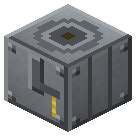

Frasch Well
Era 3Electricity

idle

running
Place above a native sulfur deposit: finds it below (3x3) down to bedrock and melts it out with steam - 1000 mB steam -> 4 sulfur per 10 s, stone is left in place. No digging.
Parameters
| Era | 3 — Electricity |
|---|---|
| Multiblock | no |
| Drive | steam |
| Tanks, mB | 8000 |
| What it does | native sulfur from underground with superheated steam |
| Input energy | steam |
| Made of | steel plates, steel pipes of three gauges |
Fed by
- steam ← Reactor Steam Generator
Feeds
- no Zavod machine uses its product